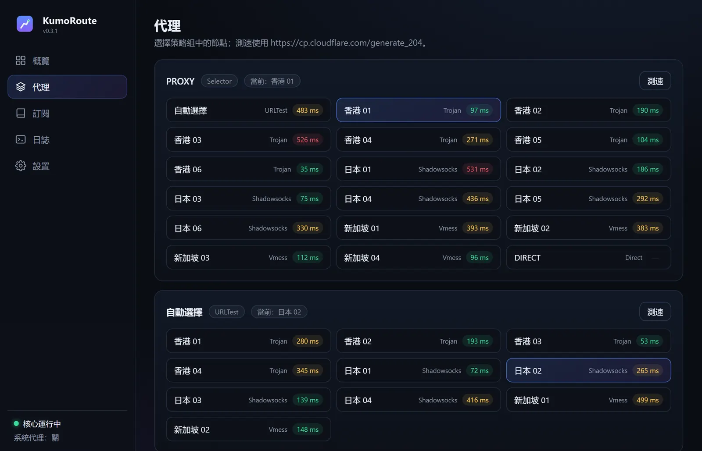

Windows 10/11
推荐安装版支持原地覆盖更新，只显示精简进度并自动重启，不需要先卸载；另有下载进度、取消与上一版失败回滚。
KumoRoute 把 Mihomo、Windows VPN、节点质量与网络诊断收进一个干净的本地桌面界面。没有广告，没有账号，也不会上传你的配置。

Windows 推荐安装版；ZIP 适合免安装使用。Linux 与 macOS 提供原生打包。
安装版支持原地覆盖更新，只显示精简进度并自动重启，不需要先卸载；另有下载进度、取消与上一版失败回滚。
AppImage 免安装直接运行；DEB 适合 Debian / Ubuntu。需要 WebKitGTK 4.1。
Intel 与 Apple Silicon 通用 DMG。未签名版本首次打开请右键 →“打开”。
不是把所有开关堆在一起，而是让代理、VPN、DNS 与节点策略彼此协调。
只用代理、只用 VPN、两者共存。连接后做真实 HTTP 验证，失败时自动断开并恢复原本代理。
Verified + rollback延迟、成功率、抖动与最近失败原因；支持固定、自动、最低延迟，连续超时自动排除。
Quality first比对 DNS 解析出口与代理出口 IP，确认是否泄漏；同时检查 DoH／DoT 冲突与 IPv6 优先问题。
Measured, not guessed每版一次提示、SHA256 校验、下载进度与取消；安装版直接升级，免安装版独立应用。
No silent install6／12／24 小时自动更新、全部订阅一键刷新；核心重载失败会回滚，备份可安全还原。
Auto-update + backup没有账号、没有云同步。设置、订阅与统计留在本机；VPN 密码由 Windows 凭据管理器保管。
Local by design不需要创建账号，也不用把配置交给云端。
Windows 使用安装版自动更新；免安装或 Linux／macOS 选择对应包。
粘贴 Clash／Mihomo 订阅链接，或导入本机 YAML 配置文件。
开启系统代理或 VPN；之后的节点、DNS 与更新都由 KumoRoute 协助处理。
深色／浅色主题，繁體中文／简体中文／English 即时切换。


只保留下载前真正需要知道的信息。
这是未签名程序的 SmartScreen 提示。项目开源，可自行检查源代码；设置签名 secrets 后，Release 会自动生成 Authenticode 签名。
不需要。Windows 安装版使用原地更新模式，只显示精简进度并自动重启；ZIP 版同样会备份、覆盖并应用更新，失败时可还原上一版。设置、订阅与 VPN 证书都保存在用户文件夹。
是。KumoRoute 只提供客户端，不包含也不销售节点与订阅服务。请自备合法的 Clash／Mihomo 配置。
不会上传。设置、订阅、日志与统计保存在本机（%APPDATA%\KumoRoute），没有账号系统或后台上传。
v0.8.1 提供 Windows（安装包／免安装）、Linux（AppImage／deb）与 macOS（Universal dmg）。手机版尚未提供。
VPN 页面提供只用代理、只用 VPN、两者共存。连接成功后会实际发送 HTTP 请求验证；若 VPN 已建立但网络不可用，会自动断开并恢复原代理。
不会。JSON 备份包含设置、远程订阅与本机 YAML；Windows VPN 证书仍只保存在系统凭据管理器。还原前会先建立安全备份。
使用重测或整组测速。代理页面会显示成功率、抖动与最近失败原因，并自动排除连续两次超时的节点。
可以。首次启动会自动迁移旧数据，证书与设置不会因更名而丢失。
开源、本地优先，没有账号，也没有广告。